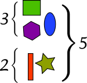
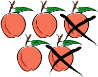

תפריט ראשי
חיבור
במתמטיקה, חיבור היא פעולה יסודית שמשמעותה צירוף של שני אוספי פריטים לאוסף הכולל את שניהם. את החיבור מסמנים בעזרת בסימן +
(פלוס). למספרים שמחברים קוראים "מחוברים" ולתוצאה קוראים "סכום". התמונה מדגימה את הביטוי 2+3=5: אם נצרף 3 צורות מלמעלה ו-2
צורות מלמטה, נקבל סך הכול 5 צורות. את הפעולה קוראים "פלוס" או "ועוד" לכן את הביטוי ניתן לקרוא כ"שתים ועוד שלוש" או "שתים פלוס
שלוש".

לדוגמא:
| לוח החיבור עד 9 | ||||||||||
| 9 | 8 | 7 | 6 | 5 | 4 | 3 | 2 | 1 | 0 | + |
| 9 | 8 | 7 | 6 | 5 | 4 | 3 | 2 | 1 | 0 | 0 |
| 10 | 9 | 8 | 7 | 6 | 5 | 4 | 3 | 2 | 1 | 1 |
| 11 | 10 | 9 | 8 | 7 | 6 | 5 | 4 | 3 | 2 | 2 |
| 12 | 11 | 10 | 9 | 8 | 7 | 6 | 5 | 4 | 3 | 3 |
| 13 | 12 | 11 | 10 | 9 | 8 | 7 | 6 | 5 | 4 | 4 |
| 14 | 13 | 12 | 11 | 10 | 9 | 8 | 7 | 6 | 5 | 5 |
| 15 | 14 | 13 | 12 | 11 | 10 | 9 | 8 | 7 | 6 | 6 |
| 16 | 15 | 14 | 13 | 12 | 11 | 10 | 9 | 8 | 7 | 7 |
| 17 | 16 | 15 | 14 | 13 | 12 | 11 | 10 | 9 | 8 | 8 |
| 18 | 17 | 16 | 15 | 14 | 13 | 12 | 11 | 10 | 9 | 9 |
לחיבור כמה תכונות בסיסיות:
- חילופיות: a + b = b + a
- קיבוציות: a + ( b + c ) = ( a + b ) + c
- ניטרליות של 0: a + 0 = a
חיסור
במתמטיקה, חיסור היא הפעולה ההפוכה לחיבור. הפעולה במשמעותה הבסיסית מציינת הפחתה. את החיסור מסמנים בסימן "-". הפעולה
נקראת "מינוס" או "פחות". את המספר שממנו מחסרים מכנים "מחוסר", המספר שאותו מחסרים נקרא "מחסר", והתוצאה נקראת "הפרש".
בתמונה, מודגם בעזרת תפוחים התרגיל 5-2=3: אם ניקח 5 תפוחים, ונמחוק 2 מהם, נישאר עם 3. בדוגמה זו, 5 הוא המחוסר, 2 הוא המחסר,
ו-3 הוא ההפרש.
